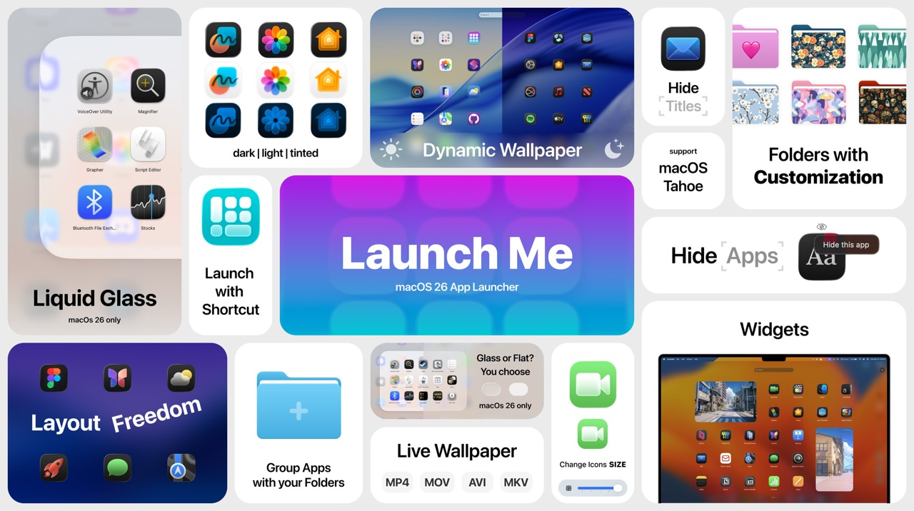

How to Get Launchpad Back on macOS 26 Tahoe
After upgrading to macOS Tahoe, you might have noticed something missing — Launchpad is gone. With all your perfectly managed folders.

Stories, updates, and deep dives about building the most customizable app launcher for macOS.
After upgrading to macOS Tahoe, you might have noticed something missing — Launchpad is gone. With all your perfectly managed folders.

Compare LaunchMe and Launchie: features, customization, and which Mac app launcher fits your workflow.
Compare LaunchMe and AppGrid: features, customization, and which Mac app launcher fits your workflow.
Compare LaunchMe and LaunchOS: features, customization, and which Mac app launcher fits your workflow.
Compare LaunchMe and HotLaunch: features, customization, and which Mac app launcher fits your workflow.
Compare LaunchMe and FolderX: features, customization, and which Mac app launcher fits your workflow.
Compare LaunchMe and AppHub: features, customization, and which Mac app launcher fits your workflow.
Compare paid-first QAL Pro vs LaunchMe Free value, including Hide Apps access and why LaunchMe is a safer choice.
Compare paid limits, 7-day trial model, gesture and layout restrictions, and why LaunchMe gives more features for free.